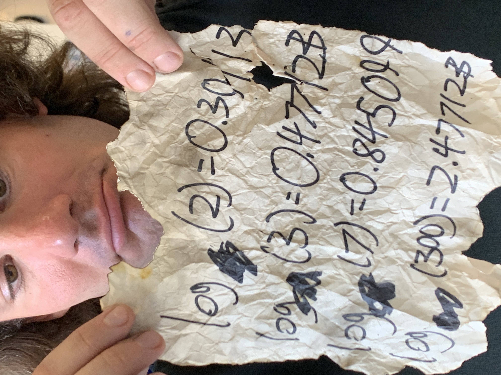

LOGPOCALYPSE!!!
Problem inspired by Matt Gil
OH NOOOO!!!! All human knowledge and civilization has been destroyed!!! Well, not all human knowledge and civilization. You’re still around. Your own knowledge of mathematics—stored in your brain—is still around. But everything else is gone—including all computational ability. No calculators, no computers, none of that. In silico? More like sin silico.
In order to rebuild society, you’re going to need to do some engineering. And that’s going to require actually computing various numbers. Which can get tough. Decimals. Ugh. You know how to do long division, so if you need to do a calculation that involves gross division and a gross decimal result, you can probably figure it out, with enough time. But what about logarithmancy?!? What if you need to calculate some gross logarithm, like \(\log_{7}(22)\)???? How can you calculate that as a decimal, by hand???
This isn’t the top thing on your mind. You’re more concerned with food, water, shelter, escaping the fallout, finding iodine pills. Rebuilding society will be for later. But you still ponder what your process will be. One day, digging through the rubble, you find a charred piece of paper, torn, barely legible:

This saved scrap seems to be speaking about the same logarithm (i.e., each log seems to all have the same base). What is that base? Can you figure it out? Using these special preserved logarithms, can you—lacking a calculator—compute decimal approximations for these other logarithms??? Like a medieval Islamic scholar saving Greek and Roman literature for future generations, can you save knowledge of logarithmancy for postapocalyptic society?
- \(\log_{\quad}(0.1) =\)
- \(\log_{\quad}(0.5) =\)
- \(\log_{\quad}(0.7) =\)
- \(\log_{\quad}(1) =\)
- \(\log_{\quad}(2) =\)
- \(\log_{\quad}(3) =\)
- \(\log_{\quad}(4) =\)
- \(\log_{\quad}(5) =\)
- \(\log_{\quad}(6) =\)
- \(\log_{\quad}(7) =\)
- \(\log_{\quad}(8) =\)
- \(\log_{\quad}(9) =\)
- \(\log_{\quad}(10) =\)
- \(\log_{\quad}(13) =\)
- \(\log_{\quad}(54) =\)
- \(\log_{\quad}(57) =\)
- \(\log_{\quad}(100) =\)
- \(\log_{\quad}(210) =\)
- \(\log_{\quad}(168) =\)
- \(\log_{\quad}(400) =\)
- \(\log_{\quad}(971) =\)
- \(\log_{\quad}(1000) =\)
- \(\log_{\quad}(2002) =\)
- \(\log_{\quad}(2 \text{ million}) =\)